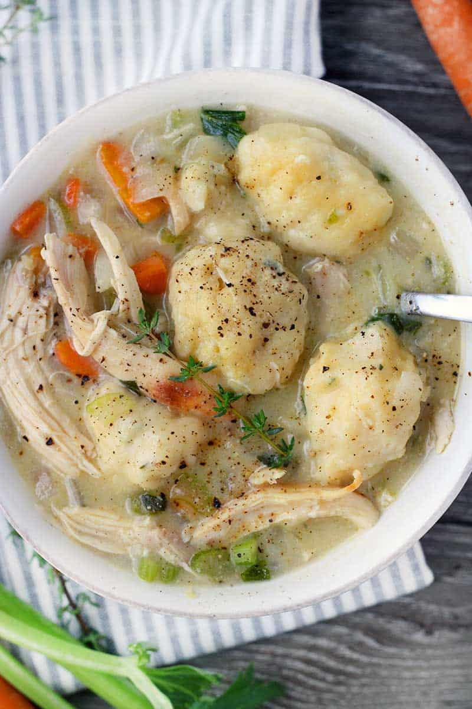

Chicken and Dumplings

Description
Chicken and dumplings are a common American comfort food, consisting of a chicken stew or soup that's been topped with fluffy (or dense, based on preference) dumplings.
Ingredients
- I am not going to seriously list out every ingredient
- I've demonstrated that I understand unordered vs ordered lists
Steps
- I also know how to make chicken and dumplings
- And I don't feel the need to get into exacting detail with my recipe
- Especially since it's actually my recipe at this point
- And not the way Aunt Jr taught me
- I understand this assignment and don't feel the need to be pedantic about cooking